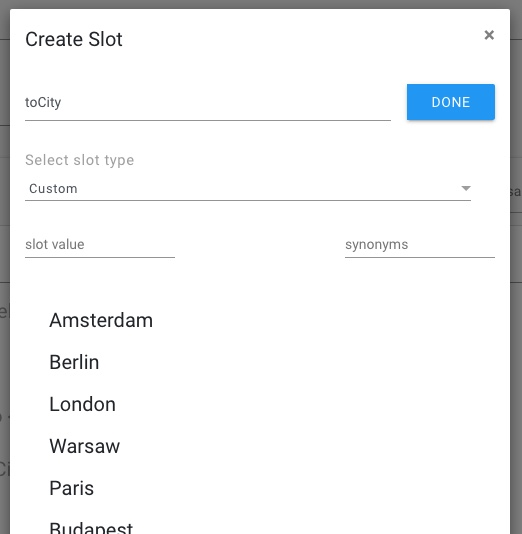
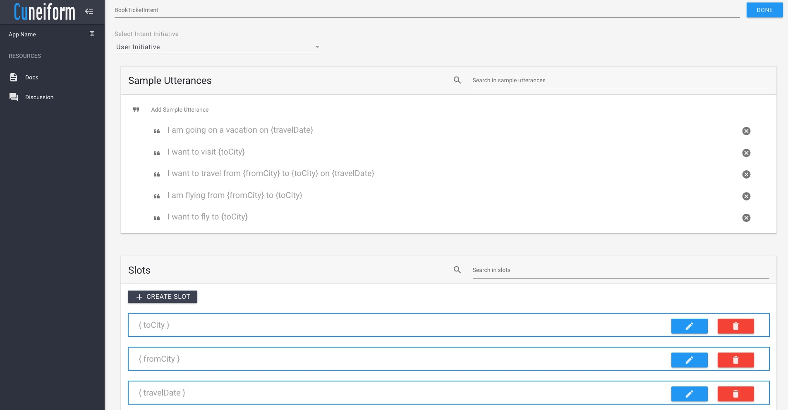
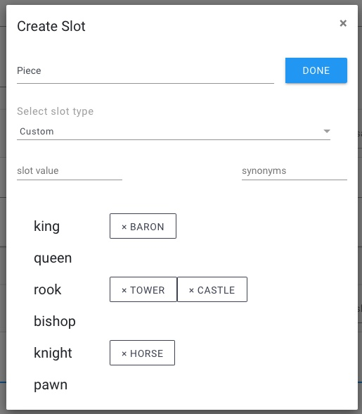

Incompatible Systems
Note that System Initiative and Mixed Initiative are not supported by a few voice assisted conversation systems such as Amazon Echo (Alexa), and Google Assistant.
An intent represents the intention of the user. In Cuneiform, we use intents to map different intentions of the user to a set of actions that is to be taken by the application.
For example, in our ChessHelper sample, application, the user may have several intentions, some of which include getting to know the goal of a chess game, learning how to set up a chess board, etc.
Intents may optionally have arguments called slots.
In Cuneiform, an intent consist of three main properties.
Cuneiform supports three types of initiatives.
A user initiative intent is an intent triggered by the user interacting with the system. For example, in our ChessHelper sample, if the user wanted wants to know how to set up a chess board, the SetupIntent is to be triggered.
In this case, it makes sense that the user requests this information from the system rather than the system unexpectedly providing the information to the user. As a result, it is recommended that we set such intents as User Initiative.
System initiative intents are initiated by the application when an event is triggered. An example of this would be a sort of weather application which may provide warning notifications to the user when a dangerous type of weather is forecasted.
Mixed initiative intents my be triggered by the user, or the system. When an application is created, a WelcomeIntent is provided by default. A good example of the WelcomeIntent being used as a mixed initiative would be a chat bot on a website, which may either welcome the user when he/she initiates the conversation, or after a few minutes when the user has browsed through the site, so as not to disturb the user immediately after visiting the site.
Note that System Initiative and Mixed Initiative are not supported by a few voice assisted conversation systems such as Amazon Echo (Alexa), and Google Assistant.
Sample Utterances are are a set of likely spoken phrases mapped to intents. When an intent is created, we must provide a list of utterances that users would say to trigger the intent.
For example,for an intent to get an overview of a game of chess (OverviewIntent), we may use utterances such as:
how do I play chess
give me an overview of chess
what are the rules of chess
Human to human conversation is about exchanging meaning in ways that make sense in the current situation. Expressing and extracting meaning is not as simple as it may seem. You will need to design conversation between your Cuneiform application and its customers carefully and intentionally. A great conversation experience allows for the many ways people might express meaning and intent.
When the users are interacting with the system through an intent, they may pass along certain pieces of data along with their utterances. These data could be used to process the user's request and assist them in achieving their goal. These sets of information are known as slots.
Consider an intent for booking a ticket for an airline (BookTicketIntent). In this case, you may use utterances such as:
I am going on a vacation on Friday
I want to visit Paris
I want to travel from London to Paris on Friday
I am flying from Dublin to Paris
I want to fly to Rome
Once you have written a few utterances, note that the words or phrases that represent variable information. These will become the intent's slots. For example, in the utterances provided above, the variables are highlighted in red.
I am going on a vacation on Friday
I want to visit Paris
I want to travel from London to Paris on Friday
I am flying from Dublin to Paris
I want to fly to Rome
Create a slot for each of such words or phrases, and replace the original word with the slot name in curly brackets ({ }).
I am going on a vacation on {travelDate}
I want to visit {toCity}
I want to travel from {fromCity} to {toCity} on {travelDate}
I am flying from {fromCity} to {toCity}
I want to fly to {toCity}
Considering the example above, we have created the slot for {toCity} as shown in the example below. In this case, the airline which is developing the application must provide all the cities it is offering flights to.
After the slots have been created, the intent for the above example may look as follows. The edit button () can be clicked an the slot data can be altered. If you want to delete any created slot, it can be done so by clicking the delete button ().
More information about the slot properties can be found below.
As of right now, Cuneiform supports three slot types
Custom slot types provide us with the option to provide custom values for slots. For example, for {toCity}, we are able to provide custom values of the cities in which the airline is offering flights to.
Datetime lets us use slot slots where specific dates and times can be provided. In the above example, {travelDate} would represent a slot with a Datetime type. These slot types can hold values for utterances like:
"Friday"
"Next Wednesday"
"Last Monday"
"Today"
"Tomorrow"
"Yesterday"
"In 2 days"
"5 days ago"
"Tomorrow at 1.30p.m."
"In an hour"
"30 minutes ago"
" ... "
To learn how to utilize Datetime slot types using DateTime objects in the Cuneiform Development Environment, you may like to look into DateTime System Operations.
Number slot types allows us to process information on numerical values users communicate with the system. These support utterances such as:
"Two"
"2"
"One hundred and thirty one"
"131"
"Three point one four"
"3.14"
"Once"
"Twice"
" ... "
Slot values are provided for slots of Custom type. For such slots, Cuneiform allows the developer to provide as many slots as they want. For each slot, the developer may also provide synonyms. Synonyms are useful when a certain slot value is identified by many names.
For example, in our ChessHelper sample, there is an intent where the user may ask the system to provide information about a given chess piece (PieceIntent). In such cases, the user may use words such as "king", "queen", "rook", etc. to provide the slot value for a chess piece. However, in certain cases some people may refer to certain pieces by other names. For example, some refer to the "rook" as "castle", and "knight" as "horse". In such cases, synonyms can be provided to reduce confusion as well as to avoid code duplication in the development process.
When creating slot values, you may need to get used to using your tab and enter keys a lot!
In the next section, we will get to learn more about conversation graphs in Cuneiform, and how they work.